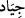

esnâsında hızlı giden at anlamında olduğu da söylenir.”
İbn Abbâs (r.a.)’den (
)’ın yarış atları olduğu ve bunların koşarken hızlı, fakat hafif
bir şekilde koştukları rivâyet edilir.
Yine rivâyete göre Süleyman (a.s.) Şamlılarla ve Rebîa ülkesinin başkenti
Nusaybinlilerle savaşarak onlardan bin Arap atı ganimet aldı. Bu atları, babasının
Amâlika’dan ganimet aldığı ve Süleyman’ın bunlara vâris olduğu da söylenir. Yalnız bu,
Peygamber Efendimiz’in (s.a.): ‘Biz peygamberlere mîrasçı olunmaz; bizim
bıraktıklarımız sadakadır”[21] şeklindeki ifâdesi, genel mânâda olmadığı takdirde
geçerli olur. Yahut da burada tasarruf yetkisinin sübûtundaki benzerlikten dolayı bir
istiâre yapılmış olabilir. Çünkü babasının beytülmâle bıraktığı zırh vb. şeylerde
Süleyman’ın tasarrufta bulunma hakkı vardı. Aynı hak Peygamber Efendimiz’in
bıraktıklarıyla ilgili olarak halifeler için de sözkonusuydu. Ebû Bekir (r.a.) de
kendisinden mîras payı isteyen Fâtıma vâlidemizi bu sebeple geri çevirmişti. Çünkü Hz.
Peygamber’in (s.a.) bıraktığı Nadîr ve Fedek hurmalıkları onun hâl-i hayatında olduğu
gibi yine hanımlarının nafakasına ayrılmış bulunuyordu. Çünkü bu hanımlar ölünceye
kadar hiç kimseyle evlenemeyeceklerdi. Halife Hz. Peygamber’in (s.a.) hâdimi ve onun
makamına kâim olduğundan onun nafakası da bu mallardan veriliyordu. Bu iki nafaka
için harcananlardan arta kalan kısım da müslümanların ihtiyaçlarına harcanmaktaydı. Bu
bakımdan Hz. Peygamber’in (s.a.) vefatından sonra Ehl-i Beyt’ine bir mîras
kalmamıştır.
Demişlerdir ki: Bunlar denizatları idiler, kanatları vardı, cinler onları denizden
Süleyman için çıkardılar. Bunu pekiştirecek mâhiyette şeyler ileride gelecektir.
Her iki takdire göre de bir gün Süleyman (a.s.) tahtının üzerinde öğleyi kıldıktan sonra
-ki o sıralar cihada gitmek niyetindeymiş- mezkûr atları görmek istemiş. Yâni kendisine
arzedilmelerini emretmiş. Atlar, Süleyman’ın (a.s.) önünden resmî geçit yapmağa, o da
atların güzelliklerini hayran hayran seyretmeğe devam ederken güneş birden batıvermiş.
Bu sırada hem -Keşfü’l-esrâr’da belirtildiğine göre kendisine farzolan- ikindiyi hem de
ikindi vakti yapmayı alışkanlık hâline getirdiği virdleri kaçırmış. Adamları da korkudan
vaktin geçmekte olduğunu söyleyememişler. Durumu fark eden Süleyman (a.s.), unutma
ve dalgınlık yüzünden kaçırdığı ibâdetlere çok üzülmüş ve Allah’a yaklaşmak ve O’nun
rızâsını elde etmek amacıyla atların tekrar getirilip ayaklarının kesilmesini emretmiş.
Onun şerîatında böyle bir kesiş, Allah’a yakınlık maksadı taşıyordu -zaten bunun için
fazla tepki de almamış- ya da o gün için böyle bir kesme şekli mübah imiş.
Ebü’l-Leys’in de dediği gibi, Süleyman’ın (a.s.) tüm istediği Allah’ın bir farîzasının
yanında dünya malının ne kadar değersiz olduğunu göstermekten ibârettir ve hayvanlara
işkence etmek gibi bir amacı yoktur.
Fakîr (Bursevî) der ki: Atların ayaklarının kesilmesinin sırrı şudur: Bu atlar
Süleyman’ı, namaza kalkmaktan alıkoydukları için ayaklarının kesilmesi suçlarına uygun
bir keffâret olmuştur.
Bazı müfesirlere göre de buradaki (
)’dan maksad boğazlamaktır. Öyleyse, ileride